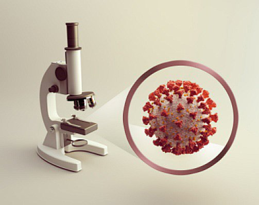
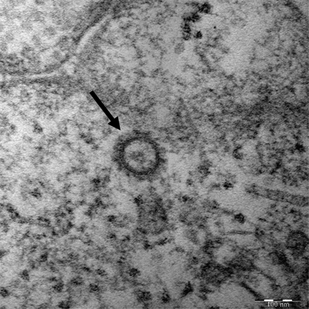
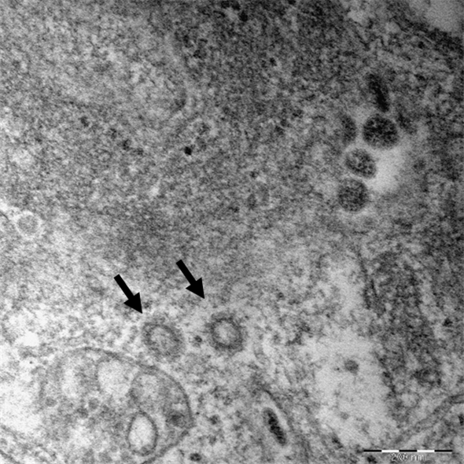

2019년 12월 중국 우한에서 처음 발생한 이후 중국 전역과 전 세계로 확산된,
새로운 유형의 코로나바이러스(SARS-CoV-2)에 의한 호흡기 감염질환이다. 코로나바이러스감염증-19는 감염자의 비말(침방울)이 호흡기나 눈·코·입의 점막으로 침투될 때 전염된다.
감염되면 약 2~14일(추정)의 잠복기를 거친 뒤 발열(37.5도) 및 기침이나 호흡곤란 등 호흡기 증상, 폐렴이 주증상으로 나타나지만 무증상 감염 사례 빈도도 높게 나오고 있다.
2019년 12월 중국 우한에서 처음 발생한 뒤 중국 전역과 전 세계로 확산된 호흡기 감염질환이다.
초기에는 원인을 알 수 없는 호흡기 전염병으로만 알려졌으나,세계보건기구(WHO)가 2020년 1월 9일 해당 폐렴의 원인이
새로운 유형의 코로나바이러스(SARS-CoV-2, 국제바이러스분류위원회 2월 11일 명명)라고 밝히면서 병원체가 확인됐다.

중국 정부는 2020년 1월 21일 우한 의료진 15명이 확진 판정을 받았다며 코로나19의 사람 간 감염 가능성을 공식 확인했는데,
이 의료진 감염 여부는 사람 사이의 전염을 판별하는 핵심 지표로 알려져 있다.
이후 감염 확산세가 이어지자, WHO는 1월 30일 '국제적 공중보건 비상사태'(PHEIC)를 선포했다.
그러다 코로나19 확진자가 전 세계에서 속출하자 WHO는 3월 11일 홍콩독감(1968),
신종플루(2009)에 이어 사상 세 번째로 코로나19에 대해 팬데믹(세계적 대유행)을 선포했다.
 